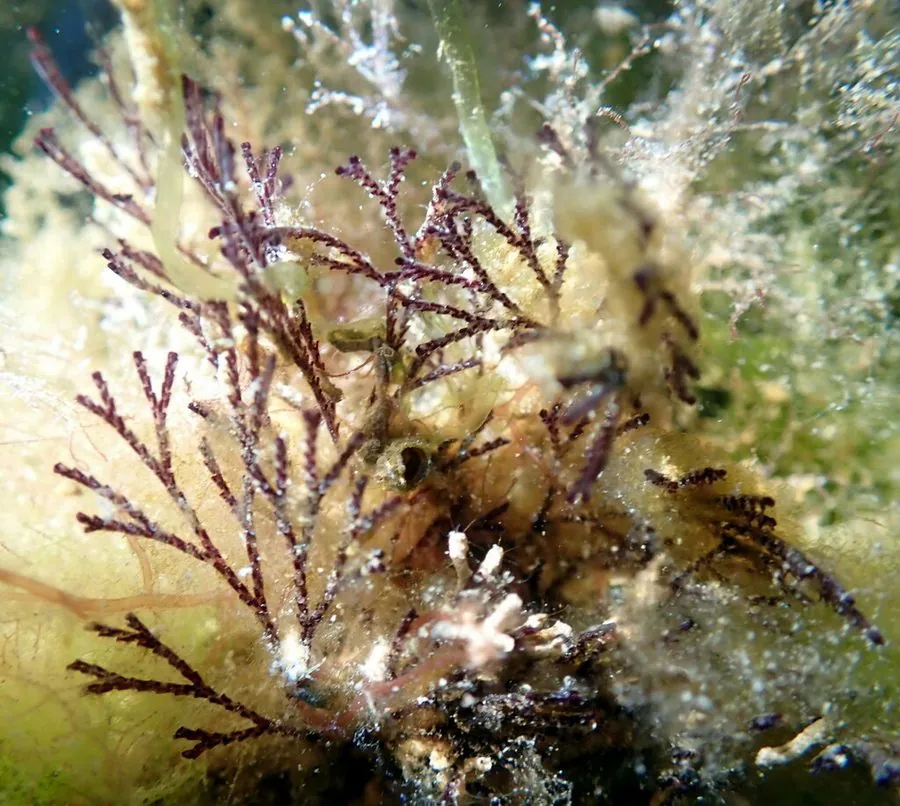

其他无脊椎动物 · 动物界
网苔虫 Bugula neritina

外形像褐色小灌木的群体苔藓虫，常被误认成海藻，其体内提取的苔藓虫素是抗癌药物研究的重要先导化合物。
- 分类
- 门苔藓动物门纲裸唇纲目唇口目科网苔虫科属网苔虫属
- 栖息环境
- 浅海岩礁、船底、码头桩柱和海藻表面，常形成丛状群体
- 地理分布
- 全球温带与亚热带沿海，中国黄海、东海、南海均有分布
- 保护级别
- 暂无评估
物种志
网苔虫的群体高5–10厘米，呈褐紫、红褐或暗褐色，分枝像小灌木或小扇子，常被潜水者当成海藻。实际上它由许多微小的个虫组成，每个个虫只有一毫米左右，前端伸出触手冠，像一朵朵小花。
苔藓虫是群体生活的无脊椎动物，个虫分工合作，靠触手冠上的纤毛滤食浮游生物和有机颗粒。网苔虫常附着在船底、码头桩柱、贝壳和海藻上，是常见的污损生物，会增加船体阻力、堵塞管道。它雌雄同体，幼虫浮游一段时间后附着，迅速长出新的群体。最引人注目的是它体内的苔藓虫素：科学家从网苔虫中提取的苔藓虫素1已进入抗癌药物临床试验，用于白血病等研究。它分布于全球温带和亚热带浅海，中国沿海常见。
形态与习性
- 群体高5–10厘米，呈褐色灌木状分枝
- 个虫每个约1毫米，前端有触手冠
- 食性靠触手冠上的纤毛滤食浮游生物
- 附着常附着船底、码头、贝壳与海藻
- 药用体内提取的苔藓虫素1进入抗癌研究
- 与海藻区别有触手冠和个虫结构，并不是植物
趣味知识
- 它常被当成海藻，其实是一群小动物组成的群体。
- 每个个虫只有一毫米，却长着一圈触手冠。
- 它体内的苔藓虫素，是抗癌药物研究的热点。